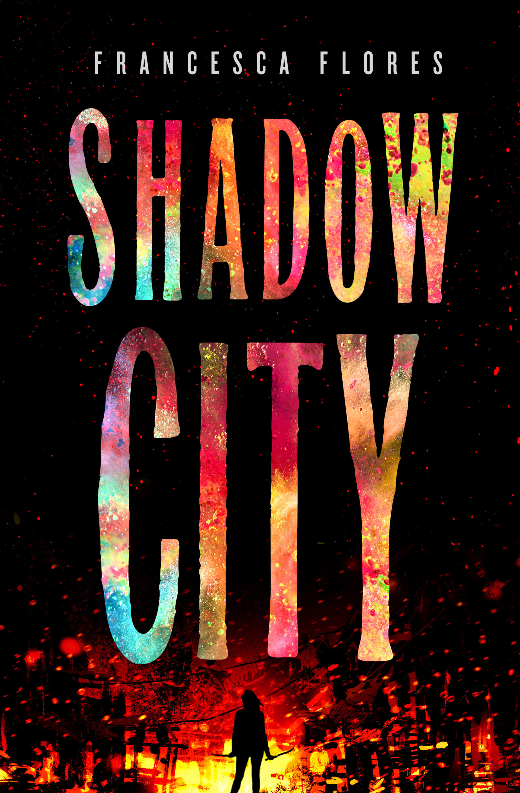
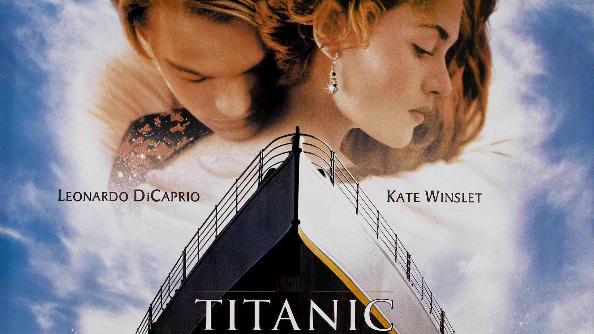
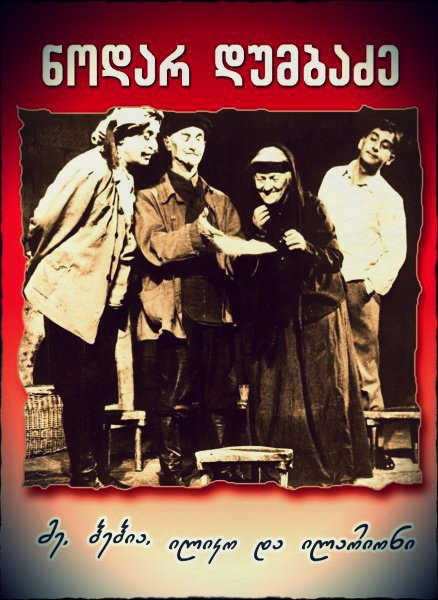
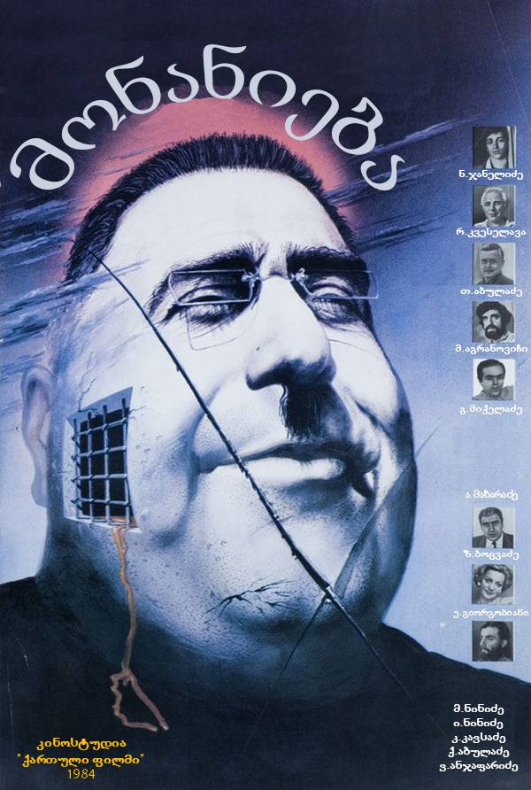

Shadow City
ჟანრი: Action / Thriller
★ 8.5Online Cinema Service
CineGo არის თანამედროვე კინოსერვისი, სადაც მომხმარებელს შეუძლია ფილმების ნახვა, თრეილერების ყურება, სეანსების არჩევა და ბილეთების დაჯავშნა.
ფილმების ნახვავებ გვერდის მიზანი, აუდიტორია და მოსალოდნელი შედეგი
ვებ გვერდის მიზანია კინოს მოყვარულებს მისცეს საშუალება სწრაფად ნახონ მიმდინარე ფილმები, თრეილერები, სეანსები და მიიღონ ინფორმაცია კინოთეატრის შესახებ.
საიტი განკუთვნილია 12-დან 45 წლამდე მომხმარებლებისთვის, განსაკუთრებით სტუდენტებისთვის, ახალგაზრდებისთვის და ოჯახებისთვის, რომლებიც ხშირად დადიან კინოში.
მსგავსი ვებ საიტებია: kinoafisha.ge, amctheatres.com, cinemark.com და imdb.com. CineGo იყენებს მარტივ, გასაგებ და თანამედროვე დიზაინს.
პოპულარული ფილმები და მათი მოკლე აღწერა

ჟანრი: Action / Thriller
★ 8.5ჟანრი: Sci-Fi / Adventure
★ 8.9ჟანრი: Drama / Mystery
★ 7.7
ჟანრი: Historical / Romance
★ 8.0ჟანრი: Action / Comedy
★ 8.4
ჟანრი: Comedy / Melodrama
★ 9.1
ჟანრი: Political Drama
★ 7.9ვებ გვერდზე ჩაშენებული ვიდეო YouTube-დან
Google Map ჩაშენებული კოდი
Google Forms-ის ჩაშენებული ველი